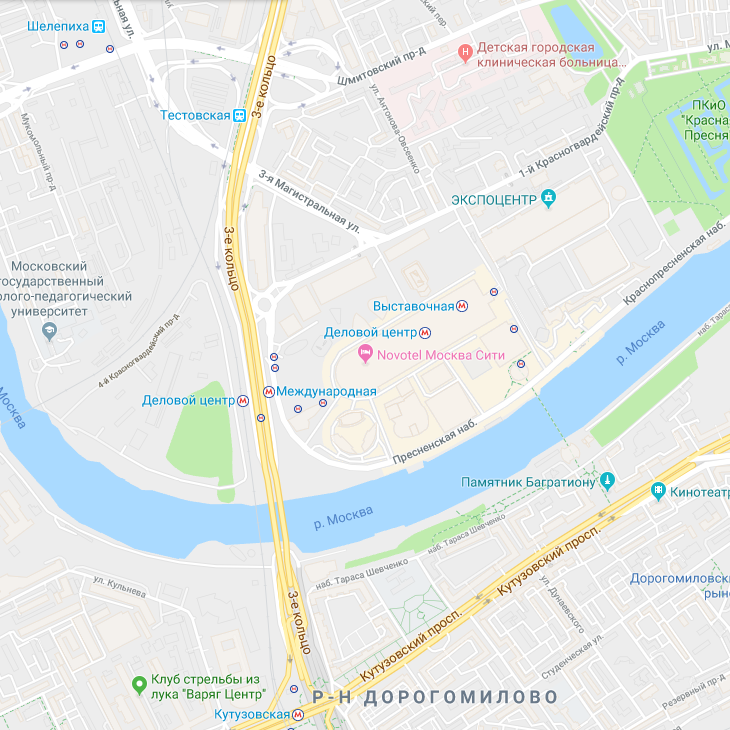

<div class='container-fluid'>
  <div class='row centered'>
    <div class='col-0 col-sm-0 col-md-2 col-lg-2 col-xl-2'></div>
    <div class='col-12 col-sm-12 col-md-8 col-lg-8 col-xl-8 main'>

<div class='col-12 col-sm-12 col-md-12 col-lg-12 col-xl-12 place-page place-page1'>

	<h1>Location</h1>

	<p>Moscow is an 860-year-old iconic, global city, which has played a central role in the development of Russia and the
		world, as the capital of the Russian Empire, the Soviet Union, and, today, the Russian Federation.
	</p>
	<p>For many, the sight of the Kremlin complex in the centre of the city is still loaded with symbolism and history.

	</p>
	<p>Today, Moscow is a thriving, exuberant capital city that overflows with life, culture and sometimes traffic. A
		sprawling metropolis, Moscow is home to numerous museums, Soviet-era monoliths and post-Soviet kitsch, but continues
		to pave the way forward as Muscovites move into the 21st century.
	</p>

</div>


<div class='col-12 col-sm-12 col-md-12 col-lg-12 col-xl-12 place-page'>

	<h1>Get in</h1>


	<p id='how'>By plane:</p>
	<p>
		Sheremetyevo International Airport (SVO)
	</p>
	<p>
		Domodedovo International Airport (DME)
	</p>
	<p>
		Vnukovo International Airport (VKO)
	</p>
	<p>
		Zhukovsky International Airport (ZIA)
	</p>

</div>


<div class='col-12 col-sm-12 col-md-12 col-lg-12 col-xl-12 place-page'>

	<h1>Visa</h1>

	<p>The citizens of the following countries do not need a visa:</p>
	<p>
		Unlimited period - Belarus, South Ossetia
	</p>
	<p>
		90 days - Abkhazia, Armenia, Azerbaijan, Kazakhstan, Kyrgyzstan, Moldova, Tajikistan, Ukraine, Uzbekistan, Estonia
		(holders of
		an Estonian alien's passport), Latvia (holders of a non-citizen passport)
	</p>

	<p>Everyone else needs a visa. Check out <a href="https://en.wikivoyage.org/wiki/Russia#Get_in" target="blank">WikiVoyage</a>
		for details and application process.</p>

</div>


<div class='col-12 col-sm-12 col-md-12 col-lg-12 col-xl-12 place-page'>

	<h1 id='minima'>Conference Venue</h1>

	

	<p>Novotel Moscow City</p>

	<p>This modern hotel is conveniently located in Moscow City Business Centre, a 5-minute walk from ExpoCenter. A spa
		centre, a gym, free Wi-Fi and a 24-hour reception are featured at Novotel Moscow City.
	</p>
	<p>

		The spacious, air-conditioned rooms offer pastel-coloured interiors and elegant décor. Each room comes with a
		flat-screen TV, a minibar and a private bathroom with a hairdryer.
	</p>
	<p>

		MC Traders Restaurant serves international and Russian cuisine, and MC Traders Lounge Bar offers a variety of drinks
		and light snacks.
	</p>
	<p>

		Guests are welcome to relax in the Turkish steam bath or sauna, and visit the on-site massage room. Afimall Shopping
		Centre is located in the same building, and Moscow sky deck is located nearby. The Kremlin and the Red Square are 5
		km away.
	</p>
	<p>

		Delovoy Tsentr Metro Station is just a minute’s walk from Novotel Moscow City. Belorussky Train Station is 4.5 km
		away, and Sheremetyevo International Airport is a 35-minute express train ride from this station.
	</p>

</div>


<div class='col-12 col-sm-12 col-md-12 col-lg-12 col-xl-12 place-page' id='additional'>

	<h1>Additional Info</h1>

	<p><span>📢</span> Directions and public transit announcements are in Russian and English.</p>

	<p><span class="rur">a</span> Currency - RUB.</p>

	<p><span>🔌</span> Power socket - EU. Adapter may be required.</p>

</div>

</div>
</div>
</div>
